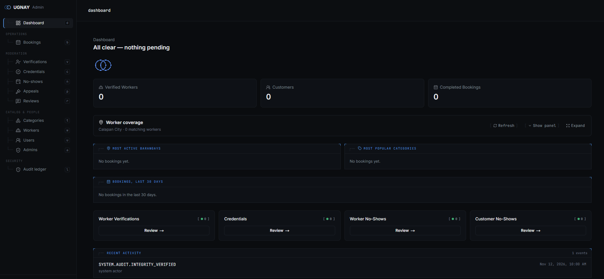
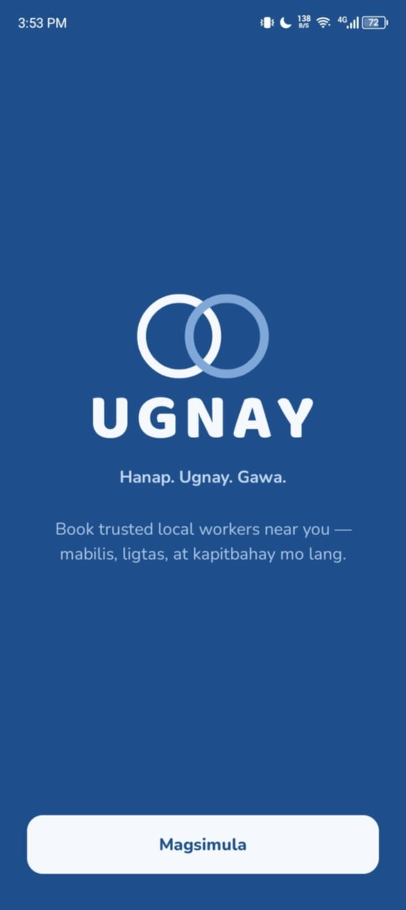

Ugnay
-
Hanap. Ugnay. Gawa.
A community platform for booking trusted local workers near you — mabilis, ligtas, at kapitbahay mo lang.
-
My role: UI/UX & co-founder
I shape how Ugnay looks and feels, from the first screen a neighbour sees on their phone to the dashboard the team uses to verify workers and review bookings.
-
Finalist, IBIBES Incubation Program
Ugnay was selected as a finalist in the IBIBES Incubation Program. Its admin dashboard already maps worker coverage across Calapan City.

